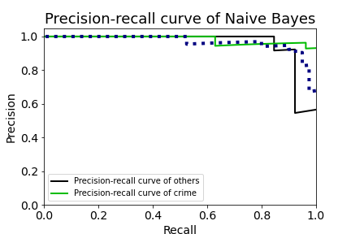
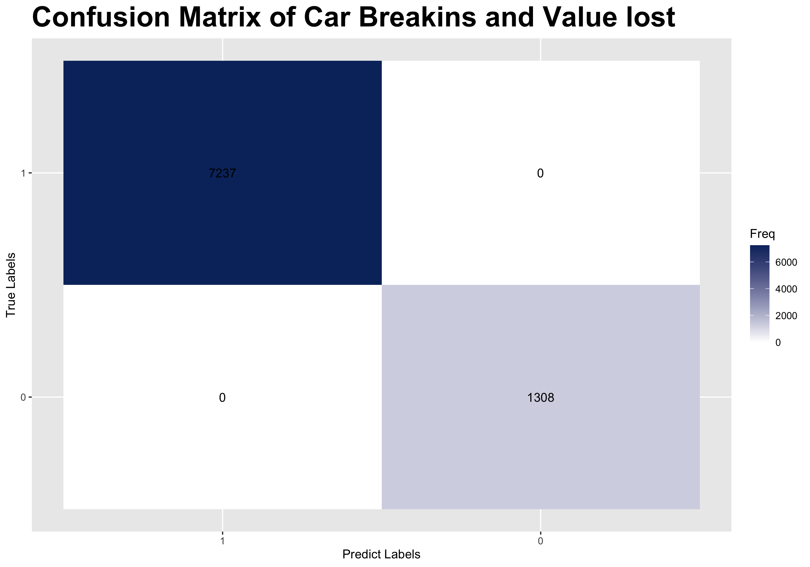

Naive Bayes
Modeled by python
Car Breakin Crime Reports Detection Based on Tweets
The model is built with tweet texts. A naive bayes model was built after the texts were vectorized to distinguish crime reports from others.
According to the learning curve, the performance on both training data and cross validation data continuously increase. As the number of examples increase, the score of training and cross validation data reaches a high position, meaning that the model is neither overfitting, nor underfitting.
According to the precision recall curve, it is easier for model to detect crime reports from tweets that include the key word break in but non-related to car breakin crime. This means the model is applicable in practical use to detecet whether a tweets include key words like car break-in are crime report or not.
According to the confusion matrix, the precentage of true positive is much higher than other three statistics, this may cause by the unbalanced data. The negative sample is too small. We may need more samples.
Modeled by R
Value lost Detection Based on Classification features
The model is built with four classification features, including days of the week, police distric, self report or not, and car locked or not. A naive bayes model was built by these continuous variables.
The label is created by labeling different case reported by the value of good they lost. According to the frequency plot, locked car were tend to lose more valueable goods compare to others.
According to the confusion matrix, this model performs better than the previous one. The number of true positive and true negative is high and the number of false negative is 0,meaning it has low error rate.
The model based on key words and texts is more practical compared to the classification features by police districs and others desipte a slightly lower accuracy. However, these classification feature, whether the car is locked or not, the crime is self reported compared to police report does provide an accurate predcition of the value lost.